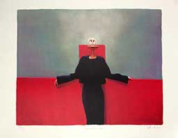
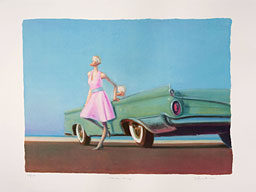
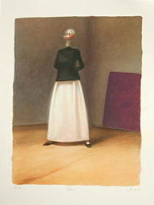
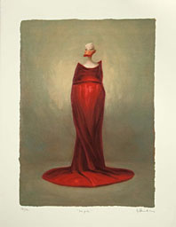

| 
KURAATTORIN VIRKA
Serigrafia, 2008 Vedosmäärä: 195 Kuva-ala: 53 x 42 cm Tuotenumero: 37 Hinta: 380 € |

OLEMISEN KEVEYS
LOPPUUNMYYTY
Serigrafia, 2009Vedosmäärä: 195 Kuva-ala: 53 x 40 cm Tuotenumero: 39 Hinta: 380 € |

HELENE
LOPPUUNMYYTY
Serigrafia, 2003Vedosmäärä: 195 Kuva-ala: 40 x 53 cm Tuotenumero: 40 Hinta: 380 € |
| 
ISO PUKU
LOPPUUNMYYTY
Serigrafia, 2002Vedosmäärä: 195 Kuva-ala: 38 x 53 cm Tuotenumero: 73 Hinta: 380 € |
Yllämainitut hinnat ovat lehtenä, sis.alv. Kehystysneuvoja kauttamme. Ota
yhteyttä sähköpostitse ja pyydä esittelyä tai tilaa suoraan.